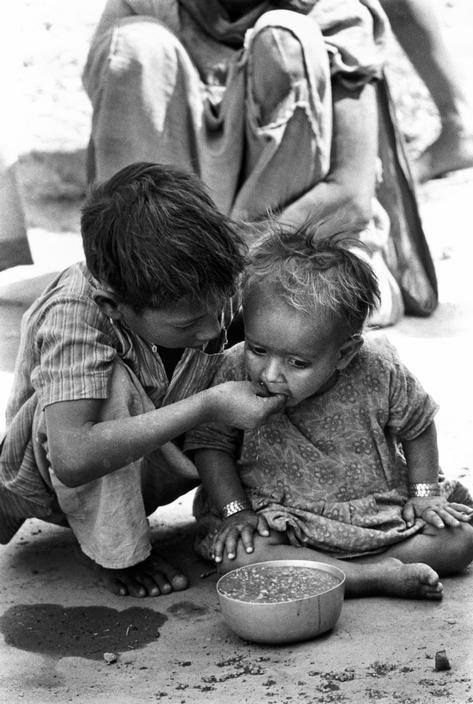
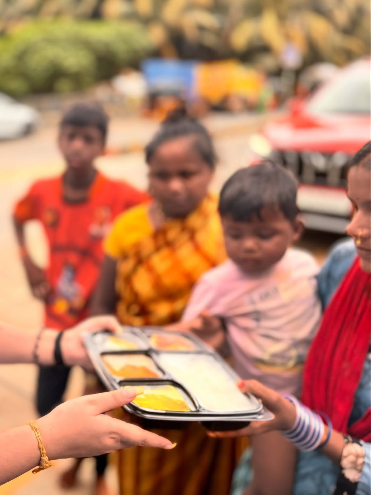
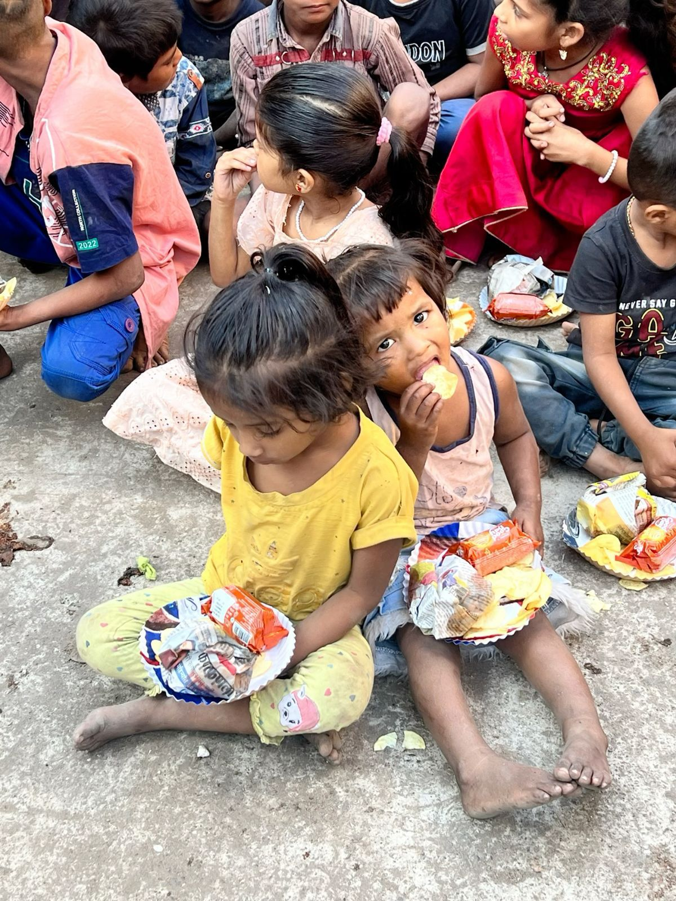
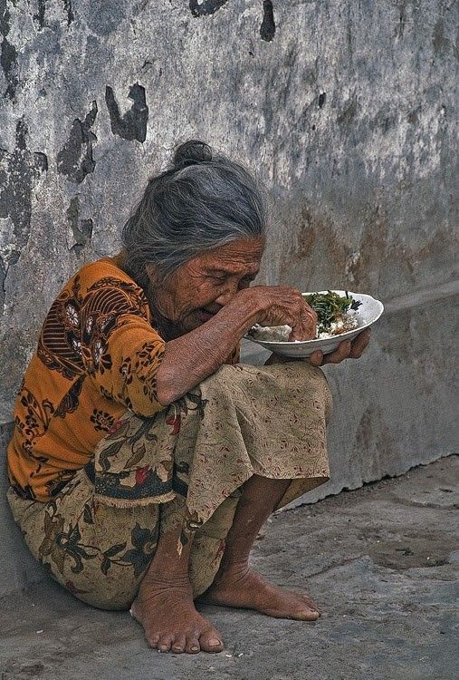
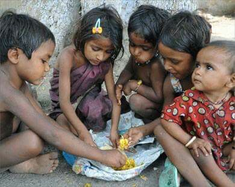

Good food belongs on plates, not in landfills.
Connect surplus food with people who need it—safely, quickly and locally.
How would you like to use ALMS?
Choose a role to begin.
🚨 Emergency donation response
Activate for floods, disasters, heatwaves or shelter shortages.
Live food rescue map
Tap a marker to view what is needed nearby.
AI priority engine
Urgent needs are automatically shown first.
Partners, pickups & restaurant alerts
🏪 Restaurant surplus reminder
At 9:30 PM, restaurants closing at 10 PM receive: “Will you have surplus food left? Share the quantity and we’ll arrange pickup.”
🔔 Automatic donation reminders
Prompt regular donors at their chosen time.
🛕 Community partners
Temples, gurudwaras, bhandaras, marriages, restaurants, NGOs and volunteer groups can all post or collect food.
Your food rescue impact
Emission resources saved
Your rescued food has prevented 0% of the estimated emissions for this rescue route.
🏅 Surplus Saver badge earned. Complete 10 rescues to download your ALMS certificate.
Food rescue stories
Every contribution helps a neighbour eat with dignity.



